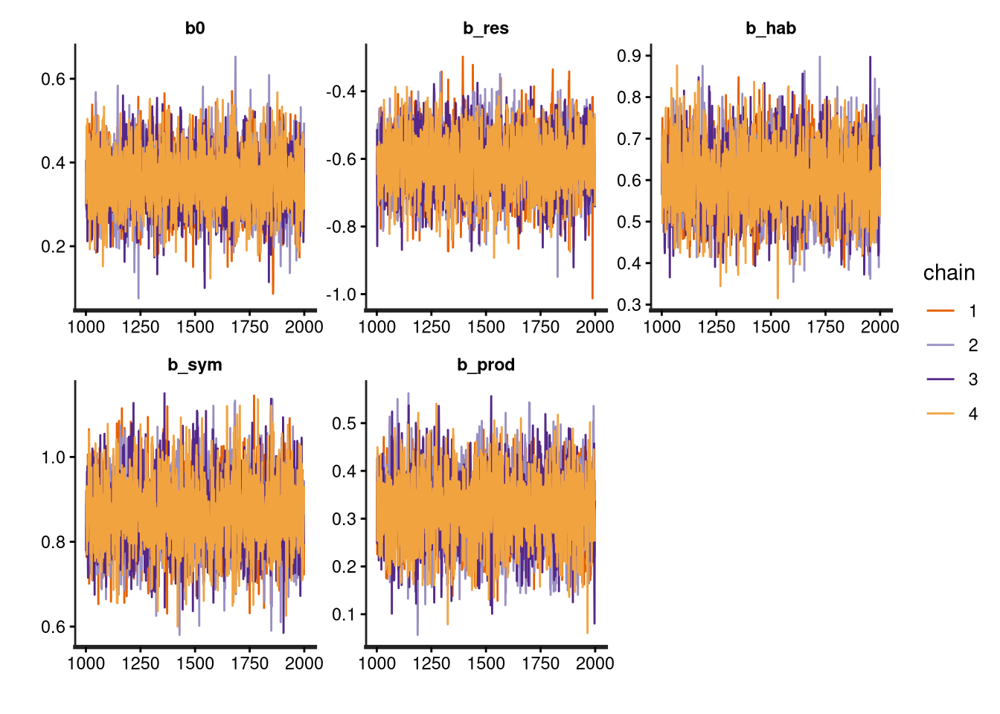
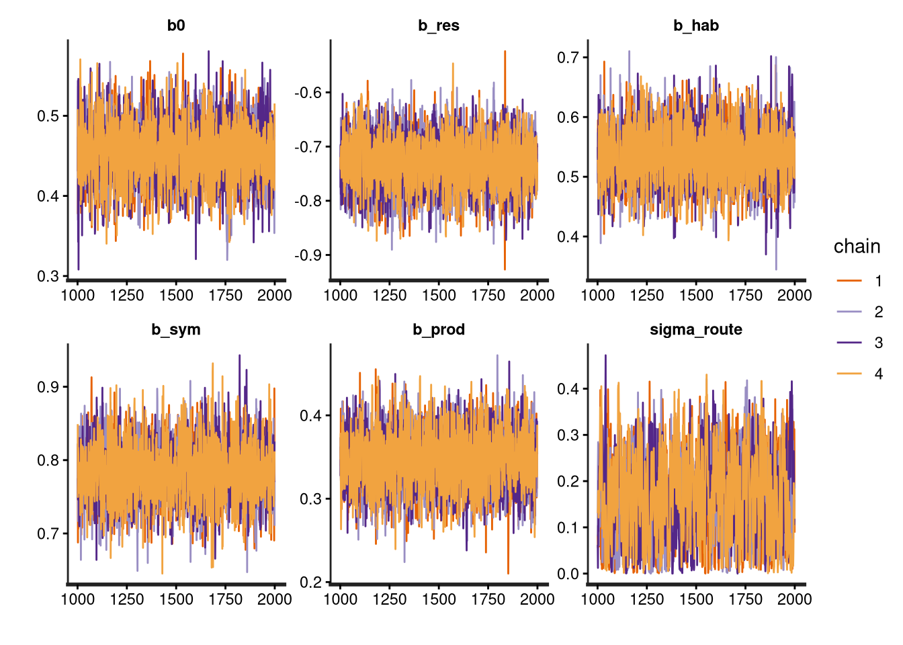
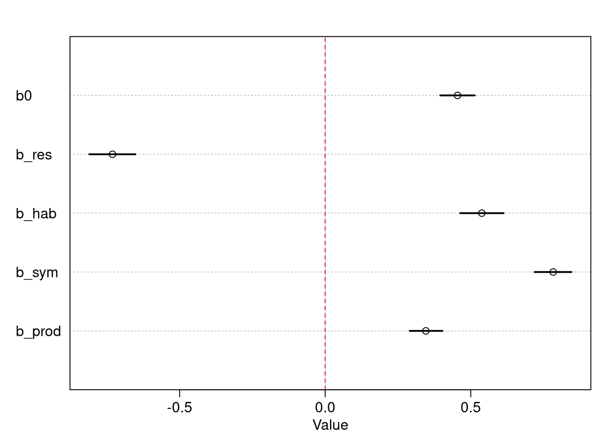

Following the framework of Remeš and Harmáčková (2023), this assignment simulates and analyses local co-occurrence (syntopy) among sister species of birds. In evolutionary ecology, syntopy is the final stage of the speciation cycle, during which two sister species meet at the same sites within their range overlap. I model the co-occurrence probability at local sites as a function of ecological and spatial predictors. This idea is connected to the topic of my master’s thesis, in which I model syntopy at two spatial scales (routes and stops) using BBS (Breeding Bird Survey) data for passerines and eBird Status & Trends range maps.
NoteAssignment Goals
Generate dream syntopy data for both scales (routes and stops).
Visualise and explore generated data.
Fit models for both scales using the ulam function and compare the estimates with true values.
To measure syntopy accurately, we need to consider only sites within the range overlap for the analysis, because otherwise it will lead to biased results Remeš and Harmáčková (2023). We can imagine the range overlap being the jar, from which we randomly draw balls (sites). There are four possible outcomes of that draw:
Both species are present,
Species A is present,
Species B is present,
Both species are missing at the site.
If we want to model this problem using Bayesian methods, we can follow the approach in Newbury (n.d.) measuring the degree of species co-occurrence with the log-odds ratio (see box 1). The most accurate probability distribution for our problem is Fisher’s non-central hypergeometric distribution, because the sampling is carried out without replacement (unlike the binomial distribution), which reflects the true nature of the problem, given the limited number of pairs.
NoteBox 1: Bayesian Log Odds Ratio
The log-odds ratio serves as the foundational metric to quantify spatial association between sister species. Based on a standard \(2 \times 2\) presence-absence matrix (\(a\) = both present, \(b/c\) = single species present, \(d\) = both absent), the empirical calculation is:
In this assignment, we transition away from this traditional empirical formula and instead implement a Bayesian framework. The key distinctions and advantages are:
Mathematical Formulation:
The observed co-occurrence \(k_i\) is modelled with Fisher’s Hypergeometric distribution representing local survey plots within that site: \[k_i \sim \text{FisherHypergeometric}(m_{1i}, m_{2i}, N_i, \alpha_i)\]
where:
\(k_i\) = number of sites where both species co-occur
\(m_{1i}\) = total number of sites where species A is present for pair \(i\)
\(m_{2i}\) = total number of sites where species B is present for pair \(i\)
\(N_i\) = total number of sites sampled within the sympatric range of pair \(i\)
\(\alpha_i\) = the conditional co-occurrence odds ratio for pair \(i\).
For each site \(i\) out of \(N\), the co-occurrence affinity (\(ω_i\)) is the log-odds ratio of given parameters:
Mathematical Stability: By evaluating data through the Log Probability Mass Function (LPMF) of Fisher’s Non-Central Hypergeometric distribution, our model naturally handles small sample sizes and zero counts. It completely bypasses the need to delete data or inject mathematical bandages.
Symmetric Linear Predictors: Taking the natural logarithm maps highly asymmetric raw odds ratios onto a continuous linear space from \(-\infty\) to \(+\infty\), centering independent sorting perfectly at \(0\) (\(>0\) is syntopy, \(<0\) is segregation). This allows our ecological parameters (\(\beta_{\text{res}}\), \(\beta_{\text{hab}}\), etc.) to be added together seamlessly.
Information Pooling: Unlike the typical formula, which treats every route as an isolated island, our hierarchical structure links local routes together. If a specific route has noisy counts, the model performs partial pooling—shrinking its local estimate back toward the regional baseline dictated by the environmental covariates.
Prevalence Invariance: Unlike traditional similarity indices (e.g., Jaccard, Simpson), this metric standardises for baseline regional abundance, therefore isolates true ecological affinity without being biased by widespread or ubiquitous species.
2 Data Simulation
To satisfy the assignment’s complexity requirements, I define 5 true parameters that dictate the data-generating process:
\(\beta_{0} = 0.5\) (Baseline log-odds of co-occurrence; slight facilitation)
\(\beta_{res.div} = -0.7\) (Resource use divergence: greater divergence increases syntopy)
\(\beta_{hab.pref} = 0.6\) (Difference in micro-habitat and environmental preference decreases syntopy)
I want to simulate data that resembles the BBS study design (~40 km-long routes, each with 50 stops). Therefore, I need to create two data sets:
1) route scale (looking at syntopy across transects within the range overlap)
2) stop scale (looking at syntopy within transects)
For Fisher’s non-central hypergeometric distribution we can use the library BiasedUrn library, and for the modelling, we will use libraries rethinking and rstan.
2.1 Route Scale
For the number of sites, I choose a negative binomial distribution because it is integer-valued and has a long right tail.
num_pairs <-100route_occupancy <-function(num_pairs){# simulates the occupancy of species across N routes# N of routes N <-rnbinom(n = num_pairs, mu = num_pairs, size =2)# Probability distribution for species occupancy prob_m1 <-rbeta(num_pairs, shape1 =1, shape2 =2) prob_m2 <-rbeta(num_pairs, shape1 =1, shape2 =2)# Species occupancy m1 <-rbinom(num_pairs, size = N, prob = prob_m1) m2 <-rbinom(num_pairs, size = N, prob = prob_m2)list(N=N, m1=m1, m2=m2)}route_oc <-route_occupancy(num_pairs = num_pairs)hist(route_oc$N, breaks =12, main="N Sites Distribution", xlab="Number of sites for sister pair", col="purple")
Some species pairs have a very large number of sampled sites, while others have just a few within the sympatric range. We can check the parameters of the distribution:
summary(route_oc$N)
Min. 1st Qu. Median Mean 3rd Qu. Max.
3.00 37.00 73.00 89.89 128.75 407.00
We can also check the occupancy distribution of the first species set in the pairs:
Let us continue with parameter generation. First, I will generate three already standardised variables using the normal distribution.
X_res_div <-rnorm(num_pairs, mean =0, sd =1) # X1X_hab_pref <-rnorm(num_pairs, mean =0, sd =1) # X2X_prod <-rnorm(num_pairs, mean =0, sd =1) # X3hist(X_res_div, breaks =12, main="Resource Use Divergence", xlab="Degree of divergence", col="orange")
Let us continue with parameter generation. First, I will generate three already standardised variables using the normal distribution. For the degree of sympatry (% of range overlap), I need to generate a distribution with x > 5 (the minimum degree of sympatry is typically 5 %) and x <= 100. As I want the values to have decimals and I need a strict upper limit, I have to use a beta distribution.
The data.frame looks good, and we should now explore the data before proceeding to the next stage.
nrow(route_data[route_data$k ==0,])
[1] 15
# There is 18 pairs with k=0route_data[abs(route_data$m1 - route_data$m2) >100,]
N
m1
m2
k
res_div
hab_pref
prod
sympatry
22
215
159
50
45
0.7065288
-0.2950050
-0.9252012
1.6677320
51
124
6
111
6
-1.8049758
-1.7082702
0.0275790
2.0987846
91
248
30
152
20
0.4852115
-0.2990197
1.8138247
-0.9147479
94
157
15
139
15
0.5672497
1.3156051
-0.8801881
0.4669157
# There are 4 pairs with a very high difference in occupancy between species
Now we have to make an unique id for each pair to be able to link it later with stops data.
# Add unique IDs, true odds ratio and true log-odds ratioroute_data$pair_id <-1:nrow(route_data)route_data$OR <- alpharoute_data$log_OR <- log_alpharoute_data[route_data$m1 ==0& route_data$m2 ==0,]
N
m1
m2
k
res_div
hab_pref
prod
sympatry
pair_id
OR
log_OR
26
6
0
0
0
0.4388219
1.004804
-0.6637302
-1.7919380
26
0.433024
-0.8369622
57
3
0
0
0
0.7831276
2.152701
-1.3818547
-0.0653773
57
2.174009
0.7765729
There are 2 routes with zero occupancy, so-called double zeros. Double zeros could mean two things. Either both species are truly absent at the route (true negatives), or they were not detected during the survey (false negatives). Given that the route is within their range zone and there were 50 points where at least one of the species could have been detected, it should be more likely that they were not there.
2.2 Stop Scale
The next step is to simulate point-scale data from the route data we already have. I choose to filter only pairs with k >= 1, because there is no reason to calculate syntopy on transects where there is 0 possibility of co-occurrence.
# Select only rows where k >= 1valid_route_data <- route_data[route_data$k >=1, ]# Initialize empty list and counter for fast executiondatalist <-list()counter <-1for (row_idx in1:nrow(valid_route_data)) {# Extract pair metadata and parameters current_pair <- valid_route_data$pair_id[row_idx] num_routes <- valid_route_data$k[row_idx] local_alpha <- valid_route_data$OR[row_idx] # using same alpha as for the route sclae# Calculate the realized regional occupancy rates for this specific pair rate_A <- valid_route_data$m1[row_idx] / valid_route_data$N[row_idx] rate_B <- valid_route_data$m2[row_idx] / valid_route_data$N[row_idx]# Loop through each of those specific co-occurring transectsfor (t in1:num_routes) { S_total <-50# Generate local point occupancy probabilities using the pair's regional rates local_prob_A <-rbeta(1, shape1 = rate_A *5, shape2 = (1- rate_A) *5) local_prob_B <-rbeta(1, shape1 = rate_B *5, shape2 = (1- rate_B) *5)# Boundary protection to prevent 0 or 1 probabilities local_prob_A <-max(0.01, min(0.99, local_prob_A)) local_prob_B <-max(0.01, min(0.99, local_prob_B))# Draw stop-scale occupancy counts bounded by 50 points s_m1 <-rbinom(1, size = S_total, prob = local_prob_A) s_m2 <-rbinom(1, size = S_total, prob = local_prob_B)# Safety floor: since they co-occurred on this transect, they must occupy >= 1 point s_m1 <-max(1, s_m1) s_m2 <-max(1, s_m2)# Draw realized stop co-occurrences using Fisher's Noncentral Hypergeometric s_k <-rFNCHypergeo(1, s_m1, S_total - s_m1, s_m2, local_alpha)# Wrap it up in the list datalist[[counter]] <-data.frame(route_id =paste0("Pair_",current_pair, "_Route_", t),pair_id = current_pair,S_total = S_total,m1_stops = s_m1,m2_stops = s_m2,k_stops = s_k ) counter <- counter +1 }}data <-do.call(rbind, datalist)head(data)
route_id
pair_id
S_total
m1_stops
m2_stops
k_stops
Pair_1_Route_1
1
50
13
34
9
Pair_1_Route_2
1
50
19
11
6
Pair_1_Route_3
1
50
10
31
8
Pair_1_Route_4
1
50
9
2
0
Pair_1_Route_5
1
50
18
14
4
Pair_1_Route_6
1
50
24
33
17
Finally, we join our data with the generated parameters for each pair we already have in route_data.
# Start with the simulated data (which naturally excludes k = 0 pairs)stop_data <- data |>select(pair_id, route_id, S_total, m1_stops, m2_stops, k_stops) |>left_join(# Pull ONLY the environmental covariates from route_data route_data |>select(pair_id, res_div, hab_pref, prod, sympatry), by ="pair_id" )# Verify the clean data framehead(stop_data)
pair_id
route_id
S_total
m1_stops
m2_stops
k_stops
res_div
hab_pref
prod
sympatry
1
Pair_1_Route_1
50
13
34
9
0.5941965
-0.4349607
-0.1926103
0.8118863
1
Pair_1_Route_2
50
19
11
6
0.5941965
-0.4349607
-0.1926103
0.8118863
1
Pair_1_Route_3
50
10
31
8
0.5941965
-0.4349607
-0.1926103
0.8118863
1
Pair_1_Route_4
50
9
2
0
0.5941965
-0.4349607
-0.1926103
0.8118863
1
Pair_1_Route_5
50
18
14
4
0.5941965
-0.4349607
-0.1926103
0.8118863
1
Pair_1_Route_6
50
24
33
17
0.5941965
-0.4349607
-0.1926103
0.8118863
3 Models
We have prepared our data and can now run some models using the ulam() function from the rethinking package. There are several steps we need to take to get the output:
Wrap up the data into a list so that ulam can read it.
Import the separate file for Fisher’s non-central hypergeometric likelihood function.
Set up the model formula in ulam.
Transform the code into stan syntax.
Run the model using stan() function from rstan package.
TipBox 2
The mathematical engine of this analysis is the custom Fisher’s Non-Central Hypergeometric Log Probability Mass Function (fisher_hyper_lpmf). Unlike a standard hypergeometric distribution, which assumes species are sorted completely at random, this distribution accounts for ecological attraction or repulsion via an odds-ratio parameter.
The function first calculates the absolute physical boundaries of co-occurrence (\(k\)) allowed by the individual species’ occupancy counts (\(m_1, m_2\)) within the total sampled sites (\(N\)): \[k_{\min} = \max(0, m_1 + m_2 - N)\]\[k_{\max} = \min(m_1, m_2)\]
If an observed or sampled co-occurrence count falls outside this range (\(k < k_{\min}\) or \(k > k_{\max}\)), the function returns \(-\infty\), assigning it a probability of 0 and rendering that parameter space impossible for the MCMC sampler.
3.1 Route Scale Model
For each route \(i\) out of \(N\), the co-occurrence affinity (\(α\)) is the log-odds ratio of given parameters:
dat_list <-list(k = route_data$k,m1 = route_data$m1,m2 = route_data$m2,N = route_data$N,res_div = route_data$res_div,hab_pref = route_data$hab_pref,prod = route_data$prod,sympatry = route_data$sympatry)# Read separate stan file and wrap it in the required Stan syntaxlikelihood_pmf <-paste("functions {",paste(readLines("fisher_nchyper_lpmf.stan"), collapse ="\n"),"}",sep ="\n")# Model settingsmodel <-ulam(alist(# Likelihood k ~custom( fisher_hyper_lpmf(k[i] |exp(log_alpha[i]), m1[i], m2[i], N[i]) ),# Linear Predictor log_alpha <- b0 + b_res*res_div + b_hab*hab_pref + b_prod*prod + b_sym*sympatry,# Priors b0 ~dnorm(0, 3), b_res ~dnorm(0, 3), b_hab ~dnorm(0, 3), b_sym ~dnorm(0, 3), b_prod ~dnorm(0, 3) ), data = dat_list, sample =FALSE# Generate text for stan, not sampling yet)# Extract the autogenerated textstan_code <-stancode(model)
data{
int N[100];
int m2[100];
int m1[100];
int k[100];
vector[100] sympatry;
vector[100] prod;
vector[100] hab_pref;
vector[100] res_div;
}
parameters{
real b0;
real b_res;
real b_hab;
real b_sym;
real b_prod;
}
model{
vector[100] log_alpha;
b_prod ~ normal( 0 , 3 );
b_sym ~ normal( 0 , 3 );
b_hab ~ normal( 0 , 3 );
b_res ~ normal( 0 , 3 );
b0 ~ normal( 0 , 3 );
for ( i in 1:100 ) {
log_alpha[i] = b0 + b_res * res_div[i] + b_hab * hab_pref[i] + b_prod * prod[i] + b_sym * sympatry[i];
}
for ( i in 1:100 ) target += fisher_hyper_lpmf(k[i] | exp(log_alpha[i]), m1[i], m2[i], N[i]);
}
# Paste the file-loaded functions block to the top of the text stringfull_stan_code <-paste0(likelihood_pmf, "\n", stan_code)# Run the compiled model using rstanout_routes <-stan(model_code = full_stan_code,data = dat_list,chains =4, cores =4,iter =2000,seed =1,refresh =0# <--- Turns off the iteration progress tracker)
First, we can check the convergence of chains.
traceplot(out_routes, pars =c("b0", "b_res", "b_hab", "b_sym", "b_prod"))

All chains have converged nicely!
precis(out_routes)
x
0.3580424
-0.6122113
0.6029176
0.8675144
0.3198335
x
0.0734884
0.0888388
0.0830412
0.0859066
0.0721436
x
0.2426148
-0.7535753
0.4679325
0.7310412
0.2039426
x
0.4763884
-0.4705709
0.7365925
1.0059165
0.4355752
x
4384.413
4859.209
4911.565
4756.862
4887.856
x
0.9993187
0.9993722
0.9994012
1.0005226
0.9991473
Our model estimates for most parameters are very good; the intercept mean (baseline log-odds ratio) is slightly underestimated, despite the credible interval including the true value (0.5).
3.2 Stop Scale Model
# Map character route IDs to sequential integers for Stan indexingstop_data$route_index <-as.integer(as.factor(stop_data$route_id))dat_list_stops <-list(k_stops = stop_data$k_stops,m1_stops = stop_data$m1_stops,m2_stops = stop_data$m2_stops,S_total = stop_data$S_total,res_div = stop_data$res_div,hab_pref = stop_data$hab_pref,prod = stop_data$prod,sympatry = stop_data$sympatry,route_index = stop_data$route_index)# Model Settingsmodel_stops <-ulam(alist(# Likelihood using stop-level data arrays k_stops ~custom( fisher_hyper_lpmf(k_stops[i] |exp(log_omega[i]), m1_stops[i], m2_stops[i], S_total[i]) ),# Linear Predictor: Pair baseline + Route random effect deviationlog_omega <- b0 + b_res*res_div + b_hab*hab_pref + b_prod*prod + b_sym*sympatry + (z_route[route_index] * sigma_route),# Fixed Effect Priors b0 ~dnorm(0, 3), b_res ~dnorm(0, 3), b_hab ~dnorm(0, 3), b_sym ~dnorm(0, 3), b_prod ~dnorm(0, 3),# Adaptive Priors# Non-Centered Random Effect Layer# z_route is a completely standard, clean vector array z_route[route_index] ~dnorm(0, 1), sigma_route ~dexp(1)# exponential distribution forces sigma_route# to be strictly positive (since a standard deviation cannot be negative) ), data = dat_list_stops, sample =FALSE# Generate text for stan, not sampling yet)# Extract the autogenerated textstan_code_stops <-stancode(model_stops)
data{
int S_total[863];
int m2_stops[863];
int m1_stops[863];
int k_stops[863];
int route_index[863];
vector[863] sympatry;
vector[863] prod;
vector[863] hab_pref;
vector[863] res_div;
}
parameters{
real b0;
real b_res;
real b_hab;
real b_sym;
real b_prod;
vector[863] z_route;
real<lower=0> sigma_route;
}
model{
vector[863] log_omega;
sigma_route ~ exponential( 1 );
z_route ~ normal( 0 , 1 );
b_prod ~ normal( 0 , 3 );
b_sym ~ normal( 0 , 3 );
b_hab ~ normal( 0 , 3 );
b_res ~ normal( 0 , 3 );
b0 ~ normal( 0 , 3 );
for ( i in 1:863 ) {
log_omega[i] = b0 + b_res * res_div[i] + b_hab * hab_pref[i] + b_prod * prod[i] + b_sym * sympatry[i] + (z_route[route_index[i]] * sigma_route);
}
for ( i in 1:863 ) target += fisher_hyper_lpmf(k_stops[i] | exp(log_omega[i]), m1_stops[i], m2_stops[i], S_total[i]);
}
# Paste the file-loaded functions block to the top of the text stringfull_stan_code_stops <-paste0(likelihood_pmf, "\n", stan_code_stops)# Run the compiled model using rstanout_stops <-stan(model_code = full_stan_code_stops,data = dat_list_stops,chains =4, cores =4,iter =2000,seed =1,refresh =0# <--- Turns off the iteration progress tracker)
There were several warnings at the and of the sampling, that some chains did not converged in an optimal way so we first check the traceplot for the main parameters.
traceplot(out_stops, pars =c("b0", "b_res", "b_hab", "b_sym", "b_prod", "sigma_route"))

Now we can take a look at the parameter estimates.
precis(out_stops, pars =c("b0", "b_res", "b_hab", "b_sym", "b_prod", "sigma_route"))
x
0.4545767
-0.7305365
0.5378198
0.7832212
0.3457152
0.1642035
x
0.0372950
0.0496001
0.0471678
0.0397328
0.0352572
0.0939588
x
0.3950895
-0.8102517
0.4638458
0.7192878
0.2905324
0.0189822
x
0.5134662
-0.6518122
0.6125945
0.8460992
0.4023842
0.3180582
x
5927.4645
6332.1603
4737.9331
7113.1752
5497.5393
699.6114
x
0.9996643
0.9995585
0.9992167
0.9995082
0.9998219
1.0126586
# Extract posterior sample drawspost_stops <-extract.samples(out_stops)n_samples <-length(post_stops$b0)n_rows <-nrow(stop_data)# Create an empty matrix to hold log-odds (rows = post-samples, cols = stop_data rows)log_alpha_routes <-matrix(NA, nrow = n_samples, ncol = n_rows)# Reconstruct log_omega per transect by pulling pair fixed effects and adding local random noisefor(i in1:n_rows) { pair_base <- post_stops$b0 + post_stops$b_res * stop_data$res_div[i] + post_stops$b_hab * stop_data$hab_pref[i] + post_stops$b_sym * stop_data$sympatry[i] + post_stops$b_prod * stop_data$prod[i]# Manually reconstruct the route deviation from the non-centered samples current_route_idx <- stop_data$route_index[i] reconstructed_a_route <- post_stops$z_route[, current_route_idx] * post_stops$sigma_route# Total local log-odds ratio log_alpha_routes[, i] <- pair_base + reconstructed_a_route}# 1. Compute and assign the estimated log-odds ratio back to each individual transect rowstop_data$estimated_local_log_OR <-colMeans(log_alpha_routes)# 2. Average the estimated log-odds values for each distinct pair_idpair_level_averages <-aggregate(estimated_local_log_OR ~ pair_id, data = stop_data, FUN = mean)print(head(pair_level_averages))
# Plot the fixed effects of the stop scale modelplot(precis(out_stops, pars =c("b0", "b_res", "b_hab", "b_sym", "b_prod")))abline(v =0, lty =2, col ="red") # Add a baseline line at 0

# Using the evaluation dataframe we merged earlierplot(stop_model_evaluation$true_log_OR, stop_model_evaluation$estimated_local_log_OR,pch =16, col =rgb(0.1, 0.4, 0.7, 0.6), cex =1.2,xlab ="True Log-Odds Ratio (Generative Space)",ylab ="Model-Estimated Log-Odds Ratio",main ="Posterior Predictive Validation (Stop Scale)")# Add a 1:1 line of perfect recoveryabline(a =0, b =1, lty =2, lwd =2, col ="darkgray")# Optional: Add a smooth trendline of your actual estimatesabline(lm(estimated_local_log_OR ~ true_log_OR, data = stop_model_evaluation), col ="firebrick", lwd =2)
Remeš, Vladimír, and Lenka Harmáčková. 2023. “Resource Use Divergence Facilitates the Evolution of Secondary Syntopy in a Continental Radiation of Songbirds (Meliphagoidea): Insights from Unbiased Co-Occurrence Analyses.”Ecography 2023 (2): e06268. https://doi.org/10.1111/ecog.06268.